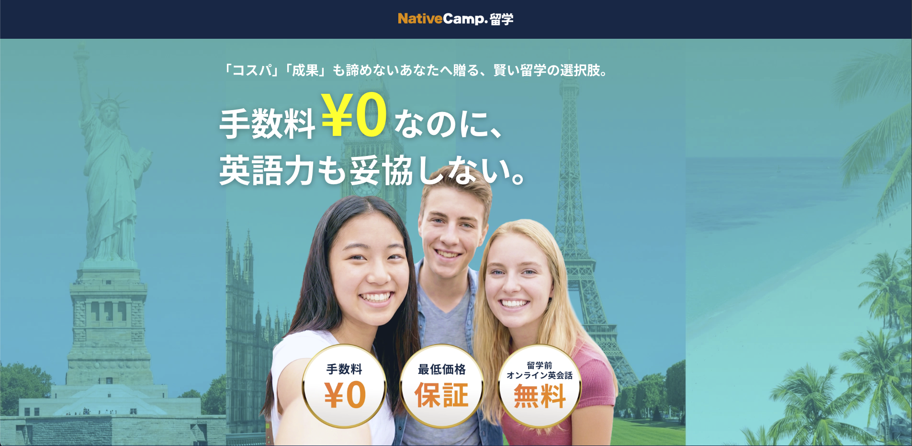

Study Abroad Counseling Reservation
Built the complete frontend UI for NativeCamp's study abroad counseling reservation system, allowing users to book counseling sessions with study abroad advisors — fully implemented from Figma designs.
View Live ↗Screenshots

What I Built
- Translated Figma designs into a fully responsive counseling reservation interface.
- Implemented a date and time slot selection UI for booking counseling appointments.
- Built form components for user information entry with input validation and error states.
- Ensured smooth and intuitive user flow from session selection through confirmation.
- Maintained full responsiveness across desktop, tablet, and mobile viewports.
- Collaborated closely with the design team via Spek Kit to ensure implementation accuracy.